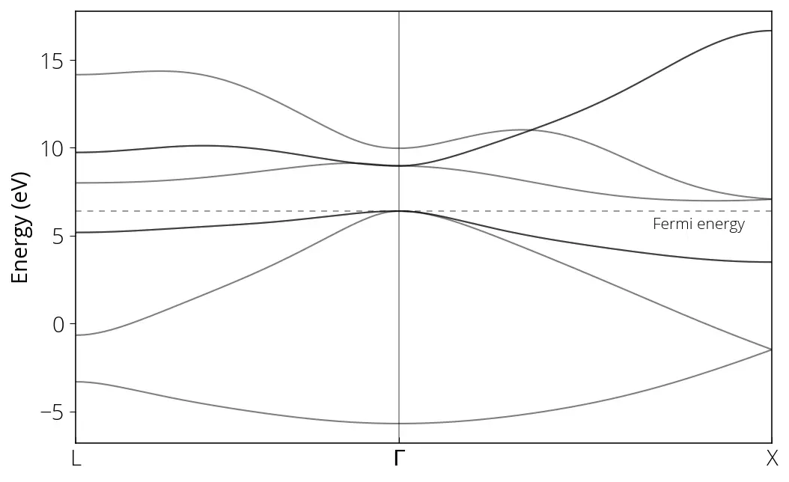

Método de Wannier
Obter a estrutura de bandas do silício
- Fazer o cálculo
scfcom opw.xdo Quantum ESPRESSO
QE_PATH="/workspaces/q-e-qe-7.2/bin"
mpirun -np 4 ${QE_PATH}/pw.x -i pw.scf.silicon.in > pw.scf.silicon.out- Fazer o cálculo
nscfcom opw.x. Em vez de uma malha automática de pontos k, precisamos fornecer uma lista explícita de pontos k. Essa lista pode ser gerada com o script Perl incluído no pacote Wannier, na pasta utility.
WANNIER_PATH="/workspaces/wannier90-3.1.0"
# acrescenta os pontos k direto no arquivo de entrada
${WANNIER_PATH}/utility/kmesh.pl 4 4 4 >> pw.nscf.silicon.inRode o cálculo nscf:
mpirun -np 4 ${QE_PATH}/pw.x -i pw.nscf.silicon.in > pw.nscf.silicon.out- Prepare o arquivo de entrada do wannier90 (
silicon.win). Aqui precisamos da lista de pontos k sem os pesos:
${WANNIER_PATH}/utility/kmesh.pl 4 4 4 wan- Gere o input nnkp:
# basta informar o seedname ou seedname.win
${WANNIER_PATH}/wannier90.x -pp silicon- Crie o arquivo de entrada do
pw2wane gere as projeções iniciais:
mpirun -np 4 ${WANNIER_PATH}/pw2wannier90.x -i pw2wan.silicon.in > pw2wan.silicon.out- Rode o cálculo de Wannier:
mpirun -np 4 ${WANNIER_PATH}/wannier90.x silicon